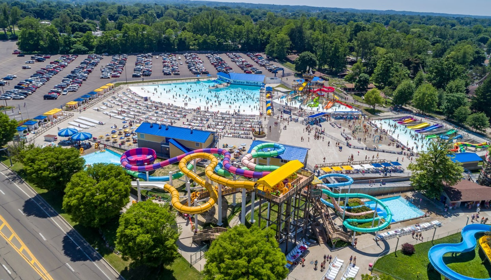
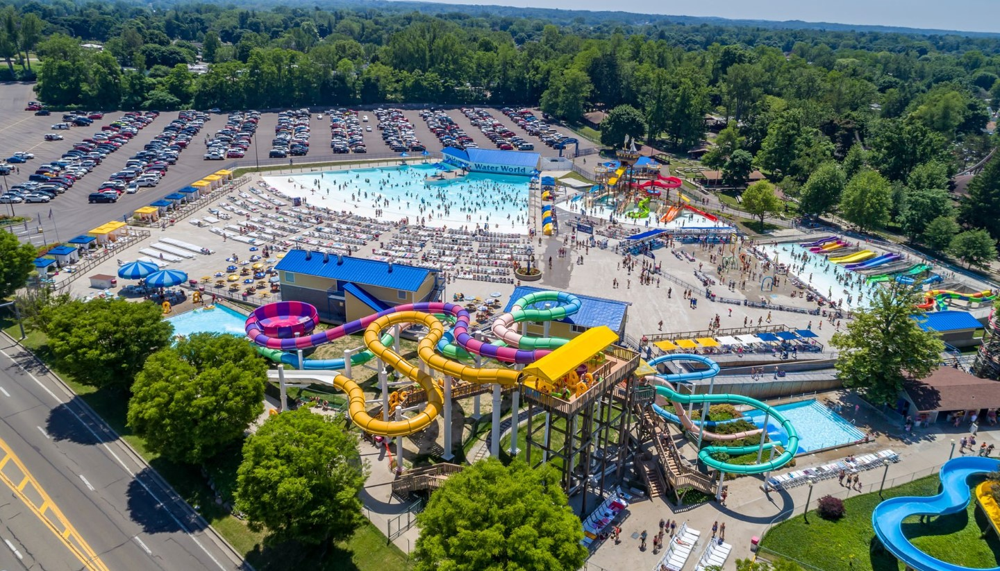
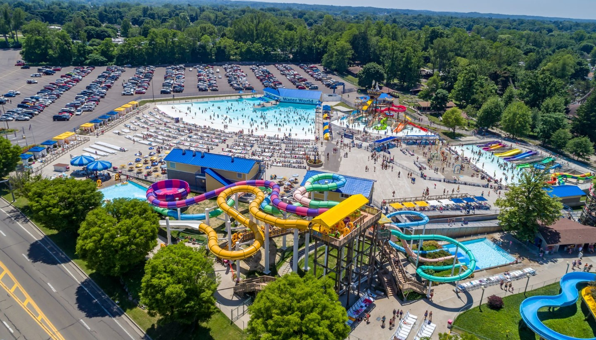
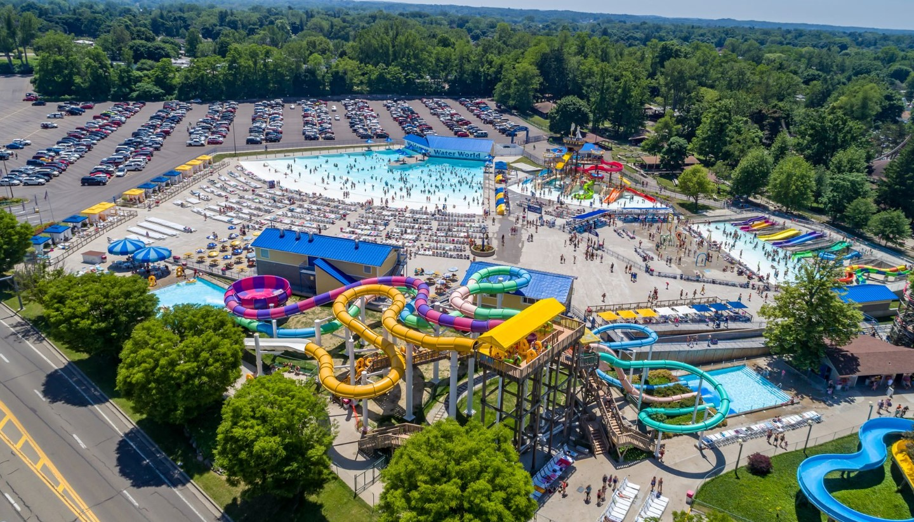

Erie, PA, offers a unique blend of natural beauty, family-friendly attractions, and rich cultural experiences, making it an ideal destination for visitors.
Nestled along the shores of Lake Erie, the city boasts stunning waterfront views and a variety of outdoor activities, from the sandy beaches and scenic
trails of Presque Isle State Park to the thrilling rides and water slides at Waldameer & Water World. Families can enjoy year-round fun at Splash Lagoon, an indoor water park, and Round1 Bowling & Arcade, entertaining for all ages. Erie also has a vibrant arts scene, historic sites, and delicious local cuisine, ensuring something for everyone.
Whether you're looking for adventure, relaxation, or a bit of both, Erie, PA, is the perfect place to create lasting memories..
301 Peninsula Dr
Erie, PA 16505
Copyright ©2024 Contact Us!